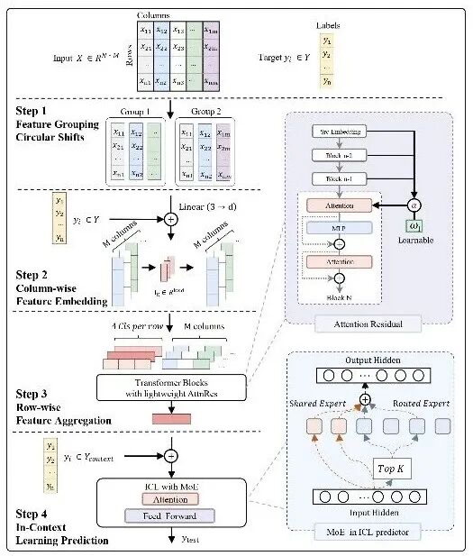
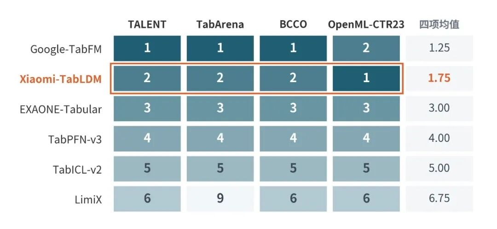
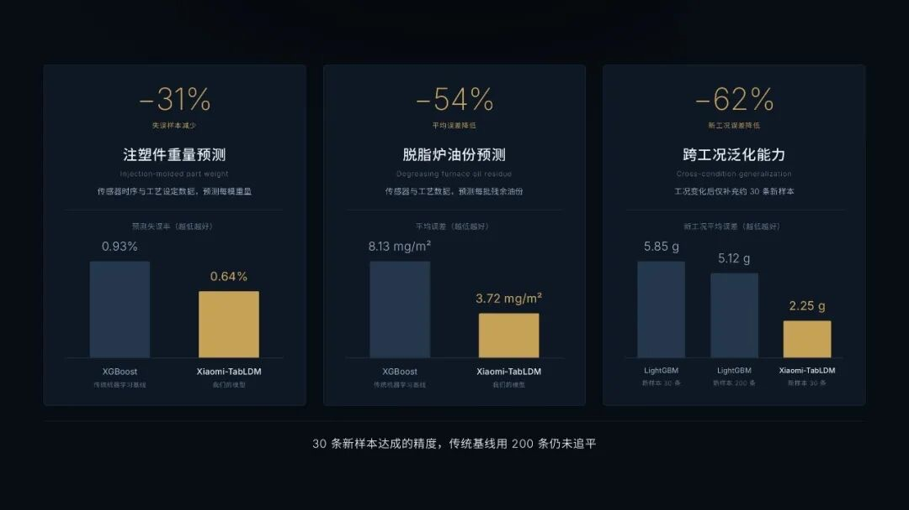

简单说：把语言模型领域的「基础模型」玩法搬到了表格数据上 —— 在大规模合成任务上预训练一次，之后面对任何新表格数据集，把标注样本当作上下文喂给它，直接出预测，全程不碰模型参数。
统一默认配置，不重训、不调参、不做超参搜索，接上数据即得结果，不必为每张表单独养一个模型。
70M 参数、一次预训练，完全基于大规模合成表格任务，覆盖广泛的表格任务分布。
分类、回归开箱即用，金融风控、医疗诊断、制造质检、物流预测跨行业直接迁移。
金融、医疗、制造、物流……真实世界的核心数据大多以表格形式存在。但长期以来，表格预测主要靠 XGBoost、LightGBM、CatBoost 这些传统机器学习方法：每来一个新数据集，就要重新训练、调超参，甚至做模型集成，多次训练、版本管理，生产和部署的代价都很重。
表格基础模型的思路是反过来：先在超大规模的任务分布上预训练好一个模型，用时把新数据集的标注样本作为上下文输入，模型理解当前任务后直接完成预测。
核心命题：表格数据能否像语言一样，通过基础模型获得跨数据集迁移能力，并随着模型、数据和推理计算的扩展持续变强？TabLDM 给出的答案是三条线一起推进。
TabLDM 完全不依赖真实数据，全部基于结构化生成的合成表格任务进行预训练：数据规模、变量类型、依赖关系、函数关系都可以程序化地变化，把预训练数据覆盖的任务分布铺得更开，让模型提前见过足够多样的表格结构。
三项结构设计，让性能提升不必伴随计算量同比增长：

预训练参数保持不变，靠增加推理阶段的计算继续涨点：用不同的特征排列、数据变换和预测视角分别给出互补的预测结果，再根据当前数据集自适应地选择与组合 —— 想要更强的精度？多算几遍再投票。
在 TALENT、TabArena、BCCO、OpenML-CTR23 四套公开基准上系统评测，覆盖二分类、多分类、回归任务，样本量从小规模一直到 10 万级。回归能力尤其突出，并超过 TabPFN-3、AutoGluon 1.5 extreme、TabPFN-2.6、TabICL-v2 等强基线。
| 基准 | 任务 | 排名 |
|---|---|---|
| TALENT | 二分类 | 🥇第 1 名 |
| OpenML-CTR23 | 回归 | 🥇第 1 名 |
| TALENT | 回归 | 第 2 名 |
| TabArena | 回归 | 第 2 名 |
| BCCO | 回归 | 第 2 名 |
| BCCO | 总体 | 第 2 名 |
回归任务四项均值 1.75，稳定第一梯队（名次 1–2）；TALENT 二分类同样拿下第一。

同样拿到 1900 Elo 的预测性能，验证耗时只有约 1/3 —— 性能与效率可以兼得。
在真实工业场景的验证中，TabLDM 相比传统机器学习展现出更高的预测精度，以及更难得的跨工况适应能力。
产线工况一旦变化，传统模型基本要推倒重来。TabLDM 只需补充 约 30 条新工况样本作为上下文，平均误差就能降低约 62%。
更狠的是：传统机器学习模型就算补到 200 条新样本重新训练，平均误差仍然远高于 TabLDM —— 后者只用了约 15% 的样本量，且全程无需微调。

从公开基准到真实产线，TabLDM 走完了研究验证到实际应用的完整一环。感兴趣可以直接拉代码跑起来。